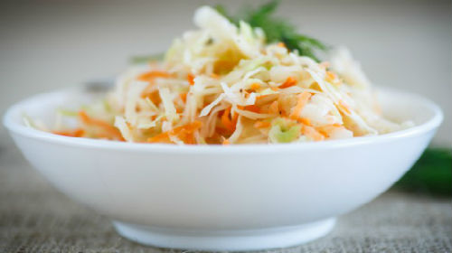

Квашена капуста: лайфхаки від професіоналів
Отож, якою має бути ідеальна квашена капуста? Та на що нам, як споживачам, орієнтуватися при купівлі цього продукту?
По-перше, потрібно відрізняти квашену капусту від інших схожих продуктів, приготованих із капусти. Це можуть бути різні мариновані продукти, у яких процес ферментації не відбувається, і які не мають всіх тих корисних властивостей, а іноді можуть бути і шкідливими.
Квашена капуста повинна бути, перш за все, смачною! Також — хрумкою, несухою, в міру солоною, із характерним ароматом, без неприємного запаху та навіть ледь помітного запаху оцту. Потрібно звертати увагу на колір капусти — вона не має бути надто білою — це може свідчити про додавання оцту. Капуста не повинна бути із слизом — це може вказувати на її псування.
А якщо хочеться самому наквасити капусти - коли це слід робити?
Квасити капусту можна будь-коли, коли є капуста! Традиційно її квасили восени і велику бочку — просто тому, що так було зручно. Але і в інший час її також можна квасити — сезон не буде істотно впливати на її смак.
А чи реально в умовах міста, не маючи льоху і бочки, вдало наквасити капусти? Розкажіть, будь ласка, як це найкраще зробити, чому приділити увагу, які існують тонкощі? Як вибрати капусту для заквашування?
Це абсолютно реально — було б бажання! :) Ну і, звісно — капуста! Найвдаліший для цього сорт — білокачанна капуста, адже у ній найбільше цукрів, які так люблять наші лактобацили-солодкоїжки!
Спочатку потрібно уважно оглянути капусту та рішуче відбракувати навіть найменші пошкодження — щоб не було ні найменшої цвілі чи інших уражень. Також слід ретельно підготувати чистий посуд — тару для заквашування, шатківницю чи ніж, миски — все має бути гарно вимитим та висушеним, перш ніж розпочати роботу. Ну і, звісно, гарно помити руки,або навіть підготувати нові чисті рукавички. Ці ньюанси є дуже важливими, тому що продукт не проходить термічної обробки і потрапляння сторонньої мікробіоти може зіпсувати продукт.
Потрібно дрібно нашинкувати капусту соломкою та додати солі (2-2,5%, або ж на 1 кілограм капусти — 20-25 г солі). Сіль потрібна не лише для кращого смаку. Ще вона стримує розвиток сторонніх мікроорганізмів, але не пригнічує розвиток молочнокислих бактерій. За бажанням можемо додати моркву. Далі все перемішуємо і переминаємо чистими руками, щоб пустився сік. Таким чином, <<корисні>> мікроорганізми, матимуть комфортне середовище для існування та "настрій" для такого бажаного нам процесу – сквашування.:) Приготовану суміш щільно вкладаємо в підготовану ємність. Не варто обирати надто широку ємність, щоб площа поверхні, яка контактуватиме із повітрям, була мінімальна. Зверху ставимо щось важке. Якщо це скляна банка, то це може бути склянка з водою. Пам'ятаємо, що скляна банка може тріснути - не докладаємо максимальних зусиль при пресуванні капусти! Нагадаємо ще раз, що капуста має бути покрита соком. Так ми перешкоджаємо доступу кисню та сприяємо молочнокислим бактеріям виконувати свою роботу. Ємності поміщаємо у тепле місце (але не вище, ніж 32ºС, можна навіть біля теплої батареї) на 2-3 доби і квашена капуста готова. Процес відбуватиметься і за нижчих температур, але це може бути трохи довше. Не варто у процесі сквашування перемішувати капусту, адже таким чином туди потрапляє небажаний кисень. Але можна акуратно протикати її довгим ножем для того, щоб вивільнити вуглекислий газ, який може накопичуватися під час бродіння.
Як довго та в яких умовах можна зберігати квашену капусту?
Зберігати квашену капусту потрібно в холоді — при температурі менше 10°С, але також і не дозволяти їй замерзати.
Однією з численних переваг квашеної капусту є довгий час її зберігання. Готовий продукт в умовах холодильника (балкону чи приміщення, де температура нижче 10ºС) може зберігатися до півроку. Чому так довго? У процесі зброджування, що відбувся, розмножилися молочнокислі бактерії, які напродукували молочної кислоти та пероксиду водню, які є біологічними консервантами, і пригнічують розвиток сторонніх мікроорганізмів - стафілококів, кишкової палички, цвілі, та багатьох інших не надто бажаних мікробів.
Чим корисна квашена капуста?
По-перше, це термічно необроблені овочі, які є чудовою їжею, багатою на вітаміни та клітковину. По-друге, це джерело молочнокислих бактерій, які оздоровлюють наш кишківник. По-третє, ці ж молочнокислі бактерії споживаючи рослинну сировину, додатково продукують вітаміни групи В та фолієву кислоту. По-четверте, бактеріальні ферменти, так би мовити, нарізають великі довгі і недоступні для нас молекули рослинних полісахаридів на маленькі фрагменти, які ми можемо засвоїти, і які проявляють антиоксидантні властивості! Молочнокислі бактерії можуть навіть розкладати нітрати та зменшувати їх вміст у капусті, якщо їх там був надлишок.
А чи може квашена капуста за якихось умов бути шкідливою?
Так, якщо вона зіпсована — може бути розлад травлення. Потрібно також памʼятати, що цей продукт містить істотну кількість солі. Окрім того, дуже зрідка, але трапляється, коли деякі штами молочнокислих бактерій синтезують такі речовини, як біогенні аміни. Вони у високій кількості можуть здійсювати токсичний вплив, що може проявлятися як головний біль, нудота чи спазм у м'язах. Тому варто прислухатися до своїх відчуттів та зважати на їх зміни!
Із цих та не лише причин є актуальною розробка пробіотичних заквасок для рослинної сировини для промислових масштабів. Над цим успішно працює група дослідників у Інституті мікробіології і вірусології ім. Заболотного НАН України.
А, поки куранти ще не задзвеніли, урізноманітнити список майонезних салатів новорічного столу можна власноруч приготованою суперстравою! Як – Ви вже в курсі :)
